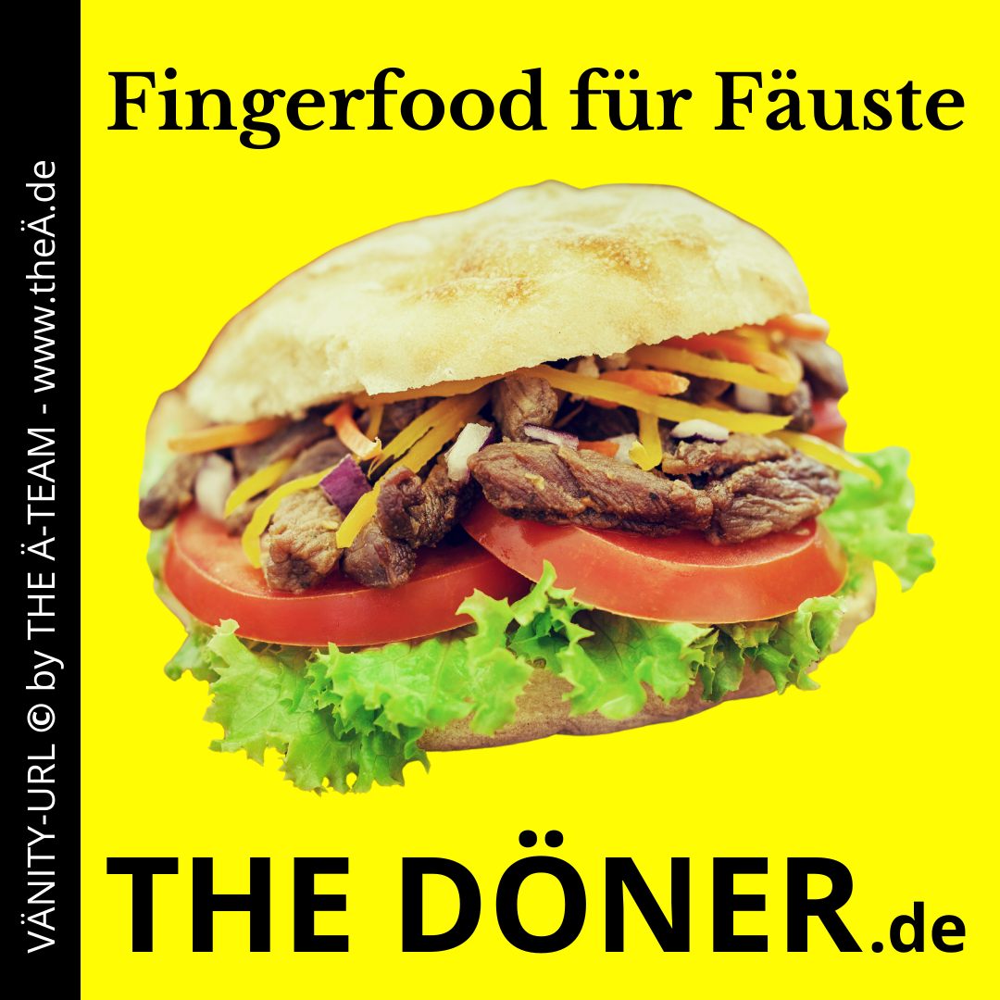

THE DÖNER - Dranbleiben lohnt sich
Die Zusammenstellung eines Umlaut-DOMÄN-PÄCKs ist ein ziemliches Glücksspiel. Jederzeit kann die Sache in die Hose gehen. Hier eine kurze Story zur 20-monatigen Jagd auf das DOMÄN-PÄCK #THEDÖNER. Spoiler-Alarm: Heute morgen konnten wir den Sack endlich zumachen!
How we gräbbed #THEDÖNER
Das Rauschen des abendlichen Verkehrs war das Einzige, das im Hauptquartier des Ä-TEAM zu hören war. Ein einzelner Bildschirm leuchtete in der Dunkelheit, sein flackerndes Licht offenbarte die Umrisse des Gesichts eines Mannes, dessen Augen vor Konzentration brannten: Thomas auf Domain-Jagd.

DOMÄN-PÄCK "THE DÖNER - Fingerfood für Fäuste" zum Einsatz bereit
Es begann alles vor 20 Monaten, als die Jagd nach dem perfekten Umlaut-DOMÄN-PÄCK #THEDÖNER begann. Ein einzelner Mann gegen die unberechenbaren Weiten des Internets. Nach monatelanger Beobachtung gelang es ihm, die begehrte Umlaut-Domain thedöner.de zu ergattern. Ein Erfolg? Vielleicht. Aber die Mission war noch nicht beendet. Für einen wahrhaft internationalen Auftritt ist zusätzlich die Domain mit Transliteration "OE" erforderlich: thedoener.de.
Die Nachricht von der Denic Ende August traf ihn wie ein Elektroschock. Denic meldete plötzlich: "Die Domain thedoener.de wurde gelöscht." Es begann ein 30-tägiges Warten, eine Zeit, in der jeder Moment zählte, ein Rennen gegen die Uhr. Aber Warten war nur die halbe Miete. Der genaue Zeitpunkt der Freigabe blieb im Dunkeln, und so musste er Tag für Tag, Stunde für Stunde überprüfen, ob das Ziel in greifbarer Nähe war.
Gestern lag Thomas von morgens bis spät in die Nacht auf der Lauer. Jeder Klick, jeder erneute Versuch war ein Nadelstich ins Herz. Jeder Blick auf die Meldung "Immer noch gesperrt" zerrte an seinen Nerven. Aber aufgeben? Das war keine Option.
Heute morgen, als die Welt noch schlief, gab es endlich Licht am Ende des Tunnels. Um 5:45 Uhr, als die Sonne noch hinter dem Horizont schlummerte, war sie da - die Nachricht, auf die er so lange gewartet hatte. "Die Domain "thedoener.de" ist frei und steht zur Registrierung zur Verfügung." Jede Sekunde zählte. Was, wenn ein anderer Frühaufsteher ebenfalls auf der Jagd war?
Mit zitternden Händen öffnete er den Kundenzugang zum Hoster, suchte die Domain, sah, dass sie immer noch frei war, und übernahm sie. Kaufen. Zustimmen. Und dann, nach endlosen Monaten des Wartens, die erlösende Nachricht: "Die Registrierung wurde bestätigt."
Das Domain-Pack #THEDÖNER war endlich komplett und bereit für den internationalen Einsatz.. Ein Triumph im digitalen Zeitalter. Für alle Beteiligten ein Abenteuer, das so manchen Action-Thriller in den Schatten stellen würde. Wer hätte gedacht, dass die Jagd nach der perfekten Domain so adrenalingeladen sein könnte?
Erfüllt #THEDÖNER die Schlüsselfaktoren für eine gute Domain
Wenn Sie daran denken, eine Domain für Ihr Business zu registrieren, sollten Sie drei Schlüsselfaktoren berücksichtigen, um sicherzustellen, dass Ihre Wahl wertvoll und wirkungsvoll ist:
- Einprägsamkeit: Ihr Domain-Name sollte leicht zu merken sein. Kürzere Namen oder solche, die einen klaren Bezug zu Ihrem Geschäft haben, bleiben eher im Gedächtnis der Menschen haften.
- Relevanz: Wählen Sie einen Namen, der Ihre Geschäftsidentität oder das, wofür Sie stehen, widerspiegelt. Dies fördert nicht nur das Branding, sondern auch das Vertrauen bei den Kunden.
- Klarheit: Vermeiden Sie komplizierte Schreibweisen, Zahlen oder Bindestriche, die Verwirrung stiften können. Ein klarer, direkt verständlicher Name ist der Schlüssel zur Maximierung des Traffics auf Ihrer Website.
Fazit
Für alle 3 Schlüsselfaktoren lässt sich eindeutig sagen: #THEDÖNER ist ein PERFECT MÄTCH!
Das Dranbleiben über 20 Monate hat sich am Ende gelohnt. Bei mittlerweile über 600 DOMÄN-PÄCKs sind wir aber froh, dass nicht jedes DOMÄN-PÄCK so widerspenstig ist wie #THEDÖNER.
Sie haben gar kein DÖNER-Restaurant? Na, dann suchen Sie sich einfach in unserem Menüpunkt "DOMÄN-Liste ein zu Ihrem Unternehmen / Ihrem Produkt / Ihrer Dienstleistung passendes DOMÄN-PÄCK aus.
THE Ä-Team in den sozialen Netzwerken:
Folgen Sie uns auf:
Zusätzlich haben wir in den sozialen Netzwerken Gruppen gegründet: